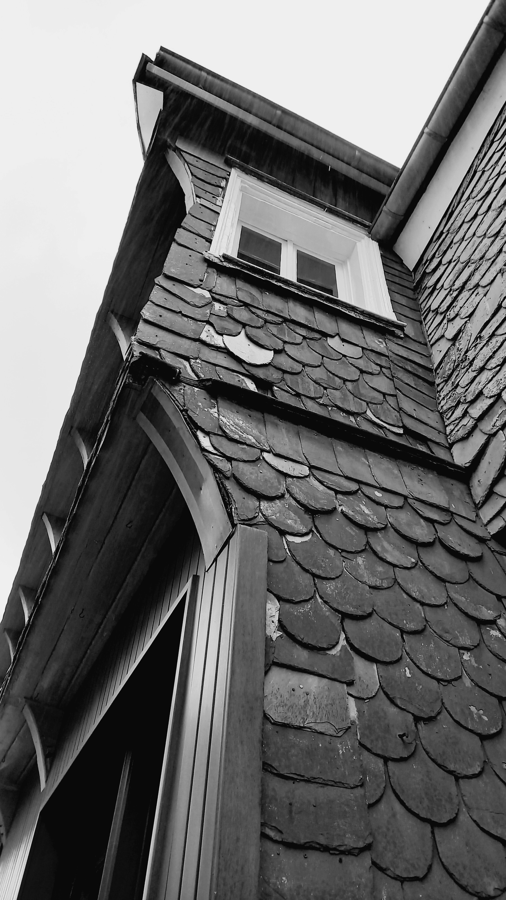
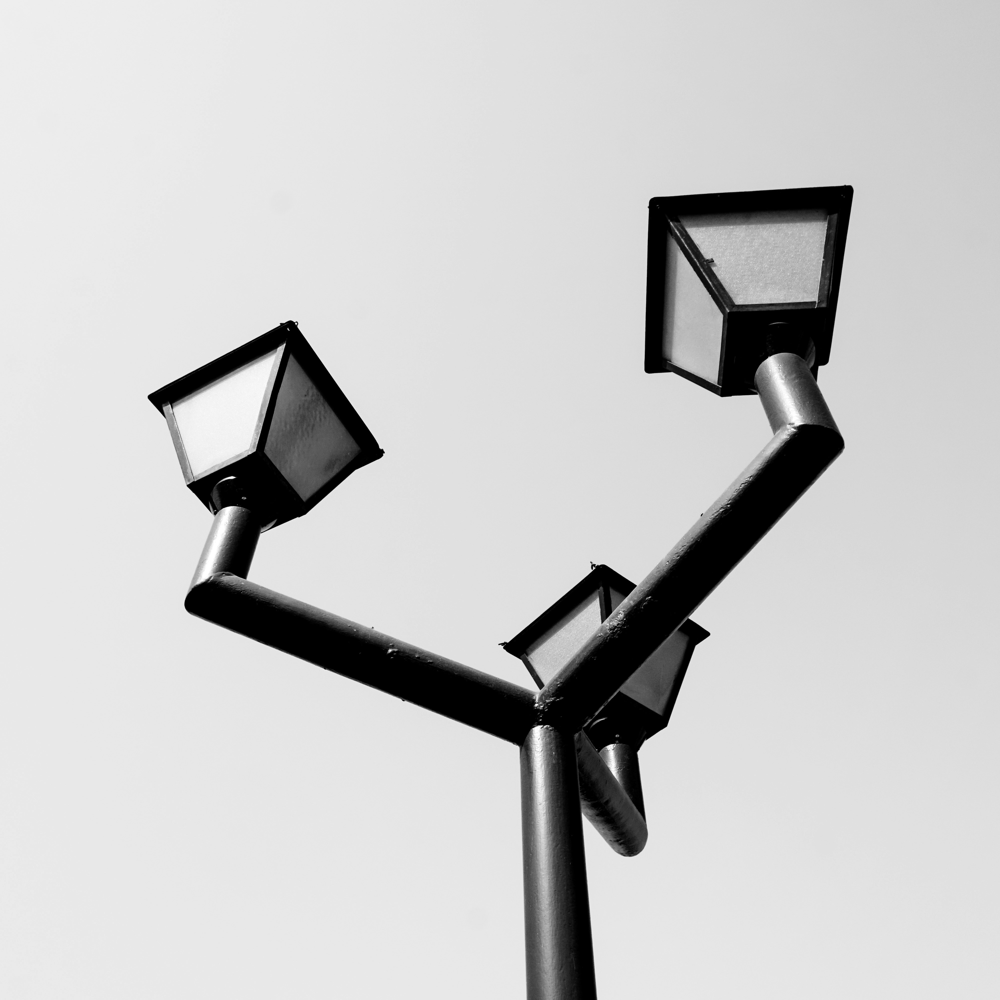
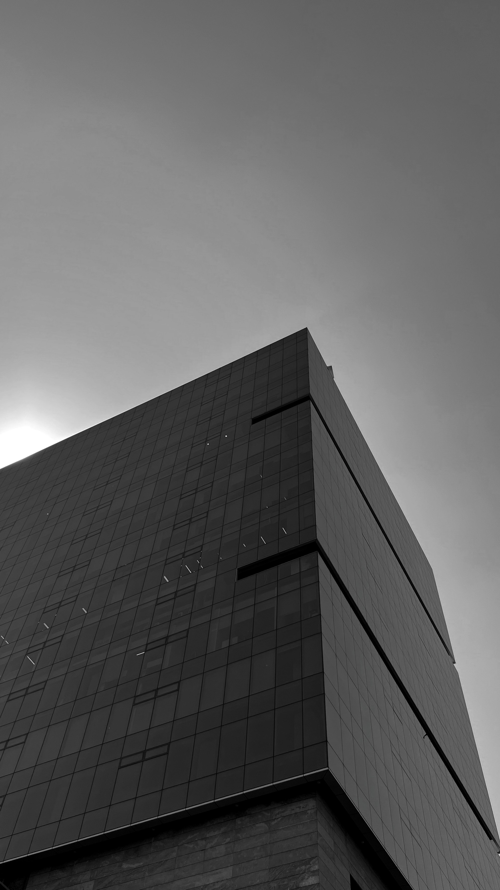
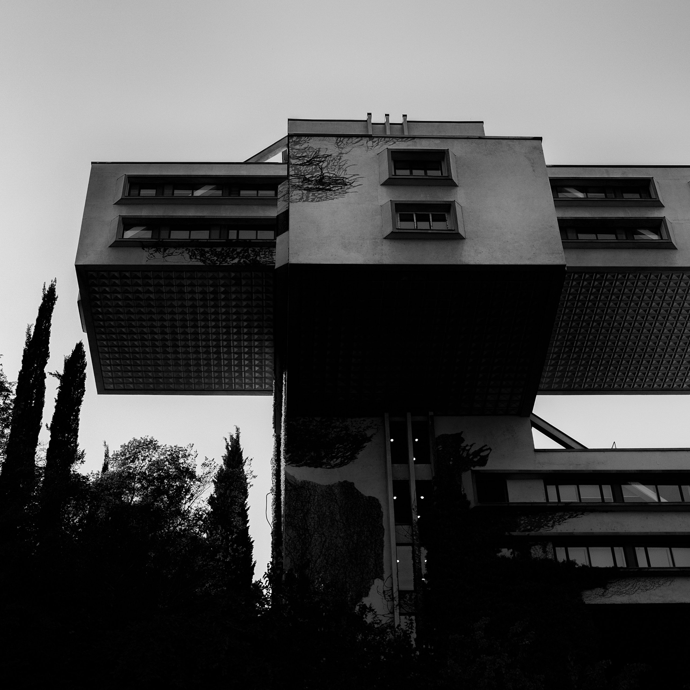
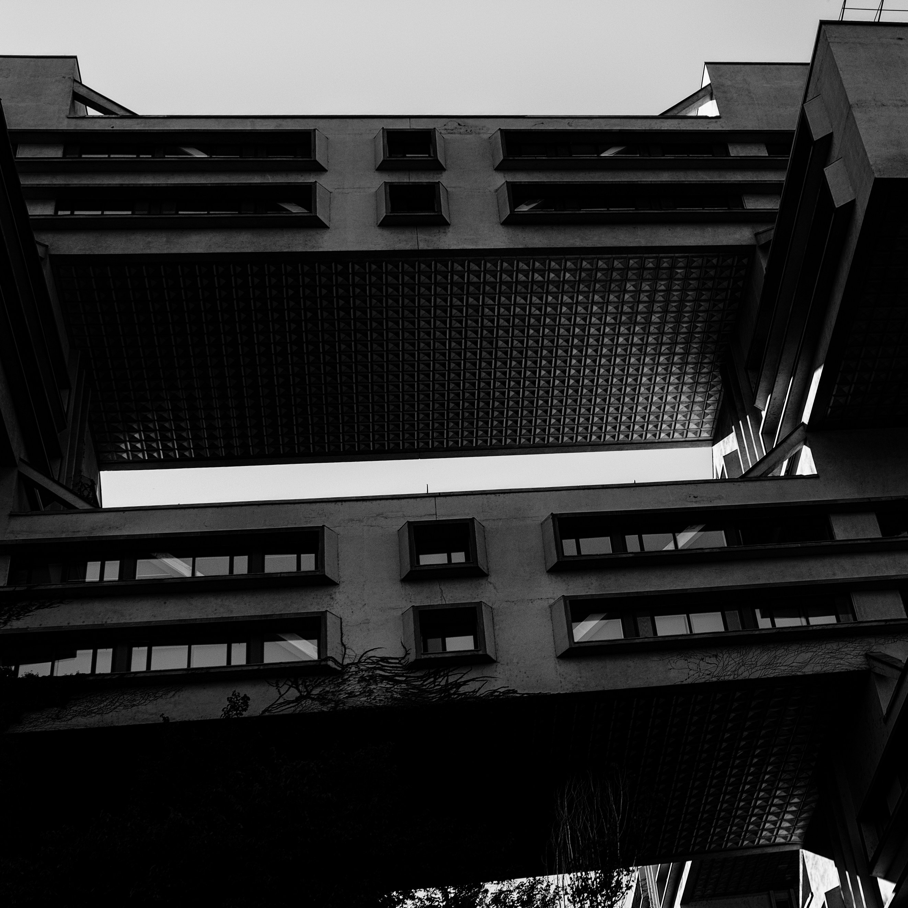

B I O G R A P H Y
View works.
Congrès National, Brasilia, Architecte: Oscar Niemeyer, 1961
Lucien Hervé is considered to be one of the great architectural photographers of the 20th century. He collaborated with Le Corbusier from 1949 until the architect’s death in 1965, developing a great rapport. Le Corbusier even once pronounced Hervé to have 'the soul of an architect.' In 1949, Hervé began to define the dialogue between substance and form.
Through light and shadow, he defined the dialogue between substance and form. By delineating a strong contrast between the light and shadows in his subject as well as placing emphasis on building details, Hervé was able to communicate the depth of a room, the surface of a wall, or the strength of a building's framework.